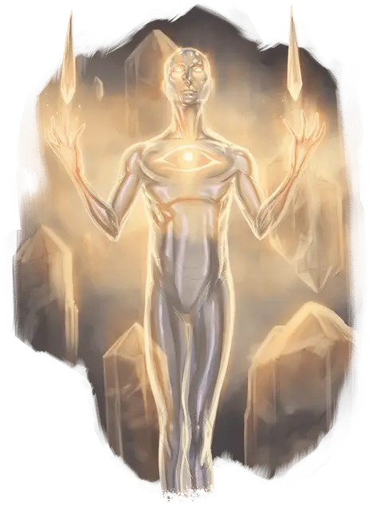

Канопа голем
Canopic Golem
Большой Конструкт

Класс Доспеха 17 (природный доспех)
Хиты 252 (24к10 + 120)
Скорость 30 футов
| мод | спас | ||
|---|---|---|---|
| СИЛ | 20 | +5 | +5 |
| ЛОВ | 10 | +0 | +0 |
| ТЕЛ | 20 | +5 | +5 |
| мод | спас | ||
|---|---|---|---|
| ИНТ | 7 | −2 | +3 |
| МДР | 11 | +0 | +6 |
| ХАР | 1 | −5 | +0 |
Иммунитет к урону яд
Иммунитет к состояниям окаменение, ослепление, отравление, паралич, очарование, глухота, испуг, истощение
Чувства тёмное зрение 120 футов, пассивное Восприятие 10
Опасность 13 (10000 опыта)
Бонус мастерства +5
Особенности
Ограниченный иммунитет к магии. Голем не может быть поражен или обнаружен заклинаниями 7-го уровня или ниже, если он этого не хочет. Голем совершает с преимуществом спасброски против всех остальных заклинаний и магических эффектов.
Неестественная природа. Голем не нуждается в воздухе, еде, питье и сне.
Действия
Мультиатака. Голем совершает две атаки.
Удар. Рукопашная атака оружием: +10 к попаданию, досягаемость 5 фт., одна цель. Попадание: 27 (4к10 + 5) урона силовым полем.
Кристаллический дротик. Дальнобойная атака оружием: +10 к попаданию, дистанция 120 фт., одна цель. Попадание: 14 (2к8 + 5) урона силовым полем.
Реакции
Отражение заклинаний. Если заклинание нацеленное в голема промахивается мимо него, то голем может выбрать другое существо в пределах 120 футов от него, которое он способен видеть. Заклинание попадает в выбранное существо вместо голема.
Описание
Органы лорда-мумии, обычно хранящиеся в сакральных канопах во время мумификации, могут быть волшебным образом трансплантированы живым гуманоидам. Реципиенты трансплантата попадают под контроль лорда-мумии [mummy lord] либо как живые прислужники, либо как лишенные собственного сознания големы, через которых лорд-мумия может видеть и говорить.